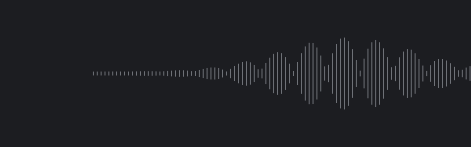
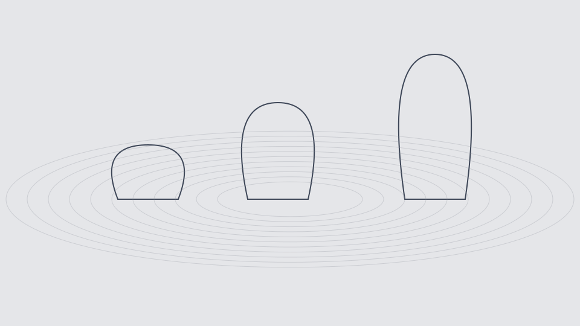

영상 준비 중
영상 준비 중01
리버스: 1999
스킬 사운드 리디자인 · 10개
상세 설명
- 작업 유형
- 사운드 리디자인
- 작업 범위
- 스킬 10개
포트폴리오
스킬 · 시네마틱 · 인게임 · 몬스터

영상 준비 중개인 포트폴리오 작업
영상 준비 중스킬 사운드 리디자인 · 10개
 영상 준비 중
영상 준비 중시네마틱 사운드 리디자인
 영상 준비 중
영상 준비 중인게임 사운드 리디자인

영상 준비 중소형 · 중형 · 대형
레퍼런스로 장면과 행동의 의도를 정리하고,
피드백을 통해 그 의도가 소리로 전달되는지 확인합니다.